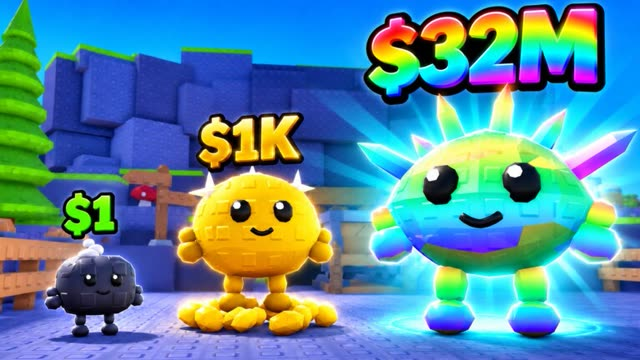

Projects
- Handcrafted I wrote it.
- AI-assisted I wrote or specified it, AI built or fixed parts, I tested it.
- AI-made AI tooling built it end to end.
HandcraftedAI-assisted
Paperface: Who's the Killer?
Murder-mystery game with 191.9M visits, where I am co-lead programmer. I built the UI, the kill effect, crates and daily rewards by hand. The season pass, shop extraction and referral rewards were built with AI to my recipes.

HandcraftedAI-assisted
Fårup Sommerland
Amusement park experience, built as sole lead programmer on a client commission. A minigame framework, collectibles checked on the server, a window-manager UI, and a roller coaster rewrite done partly with AI.

HandcraftedAI-assisted
Fish In A Pond
Fishing game from LolCo Games, where I am lead programmer. A data-driven upgrade tree, server-side fishing, daily quests and a world-event timer, plus an AI-assisted model that checks which timed baits pay for themselves.

AI-assisted
Roll Gems for Money
Roll for minerals, equip them on a plot, fuse and rebirth. AI wrote all the code from detailed recipes by me and another developer: a coin ledger, a shared stat formula, deterministic world events and retry-safe fusion. Every system was verified and tested by humans.
AI-assisted
BetterNotifications
Open-source (MIT) notifications module: a send queue that never yields the caller, rate limit, jittered retry, cross-server dedupe and durable scheduling. I set the scope and the API shape; AI built it.
AI-assisted
WiltedSuite
Game-blind services I use for internal development: monetization, limited stock, inventory and telemetry on one shared core. I write the recipes and run the QA; AI expands them. The four services are public on GitHub (MIT); the core is documented only.

AI-made
Break Blocks for Money
A one-day test of my AI tooling driving Roblox Studio: about 8,050 lines of Luau in 28 files, built in 24 hours. It shows how fast I can ship with AI, not how well the game plays.